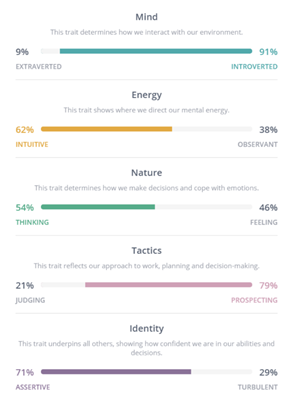

30-year-old guy in his first year of IT. Born and raised in Melbourne Australia. Love video games and turning off my brain to watch random YouTube videos and random shows on the various streaming platforms available. I also love the great outdoors, but I prefer solo travels, I used to drive around with a tent, a fishing rod, and some bait to go fishing in random remote locations. But my car these days is pretty messed up. My reverse gear doesn’t engage unless I sit there for at least 20 seconds, so reverse parallel parking is out of the question. My car also constantly stalls, at no fault of my own, as it is an auto. Why it stalls is beyond me, so I don’t really drive much anymore. Sadly, my IT experience only goes as deep as physically building a PC. Coding and scripting are currently beyond my scope, though I am learning them as best as I can. My main interest in IT is basically the inner workings of machines, coding, scripting and the unseen work that goes into making any program a program. How everything just comes together in the end is what fascinates me with IT.
These tests can be helpful in assisting to find likeminded individuals to work with in a group environment. However, my introversion score is...so high. My fear is that these tests will also make people reject me as a valid candidate for their groups. At least I’m emotionally stable I suppose, so I’m not that beat up about this whole thing.
